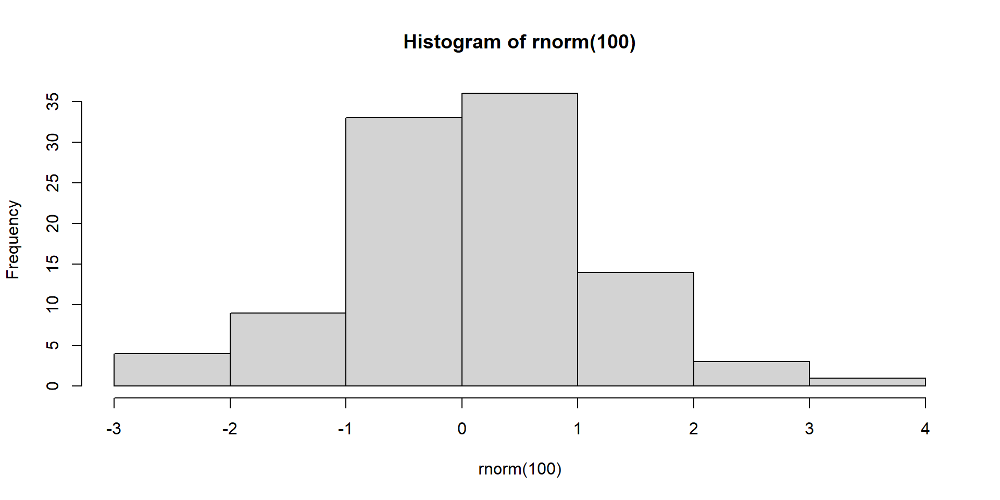

Reproducible and Automated Reporting with Quarto
https://tinyurl.com/QuartoBES
Housekeeping
This tutorial is available as a webpage here: github.
If you don’t have R Studio installed or working, no problem! It’s also available as a positcloud instance: positcloud.
If you see this emoji 🎬 then it’s an instruction to do something.
What You’ll Learn Today
- Markdown basics
- How to create a Quarto document
- What a YAML does
- Adding content to a Quarto document
- How to render Inline code
- How to render Figures + tables
- How to use Auto-renumbering
- How to use Visual editor
- How to add Citations
What is Quarto?
Quarto is a modern scientific publishing system for dynamic, reproducible documents.
- Write text + code together
- Render to HTML, PDF, Word, slides, manuscripts, more
- Supports R, Python, Julia, Observable
- Like R Markdown, but more flexible + standardised
Why Use Quarto?
Typical write-up workflow:
- Figures/tables manually updated
- Graphs are saved to file then inserted manually
- Cross-references break when ordering changes
- Reformatting for journals takes hours
- Lots of copying/pasting
- Lots of potential for errors
With Quarto you don’t have to worry about any of these. It does the work for you!
Publishing
To address the reproducibility crisis journals now increasingly want you to have your code/workbook submitted with the manuscript. Working in Quarto allows you have all of that all in one place, readily exportable to whichever format the journal requires.
Demo: Multiple Formats
These are all the same .qmd document, just with different outputs:
- HTML
- Word document
- revealjs slides
- Manuscript templates
Markdown Basics
- The YAML header sets the default behaviour for the document and is between
---at the top of the document (more on this later) - R Code chunks are between
```{r}and```and chunk options, starting#|, determine how/whether they run whether code/output is included in the rendered document - You can run code chunk interactively or through rendering
- Comments:
|#,#in code chunks,<!-- in text -->but use Ctrl+Shift+C
Text Formatting
| Markdown Syntax | Output |
|---|---|
| italics, bold | |
| bold italics | |
| superscript2 | |
| subscript2 | |
verbatim code |
Headings
| Markdown Syntax | Output |
|---|---|
Header 1 |
|
Header 2 |
|
Header 3 |
|
Header 4 |
Links & Images
| Markdown Syntax | Output |
|---|---|
| Quarto | |
|

Equations
Use $ delimiters for inline maths and $$ delimiters for display maths. For example:
| Markdown Syntax | Output |
|---|---|
| inline maths: \(E=mc^{2}\) | |
display maths: \[E = mc^{2}\] |
Create a QMD Document
Let’s create a Quarto Document (a .qmd file) in RStudio!
🎬 Go to File > New File > New Quarto Document
🎬 Give your file a name
🎬 Choose Engine: Knitr
🎬 Turn off Visual Editor (for now! We’ll learn to use Source editor first)
🎬 Now hit Render (or Ctrl+Shift+K).
You’ll see the Rendered default document in the Viewer panel.
Some recommended RStudio settings
🎬 Tools > Global Options
- General:
- Turn off the three “Restore ….” options
- Turn “Save workspace to .RData on exit” to Never - R Markdown:
- Turn “Show output preview in:” to Viewer pane
Edit the YAML
As mentioned before, the YAML determines of the settings of the .qmd document. It is defined between --- at the top of the document.
The default YAML header will look a bit like this:
🎬 Feel free to edit this. Try making your own title and add yourself as the author.
Deafult code chunk options can also be determined in the YAML:
echo: falsecode will not be included in outputinclude: trueoutput will be includederror: falsehalt render if a code error occursmessage: falsemessages and warnings will not be includedwarning: false
YAMLs can be saved as separate .YAML files and then pointed to by individual Quarto documents like so:
Useful if you want the same formatting for multiple documents!
Adding basic content
🎬 Add the code chunk below (Ctrl-Shift-I) for a simple graph, and then hit Render (Ctrl-Shift-K)
Congratulations! You’ve created your first Quarto content!
Loading in packages
Let’s try loading in an R package, in this case tidyverse (Wickham et al. 2019).
🎬 Add this code chunk for package loading:
#| label: load-packages is a code chunk label. These are useful (here) and essential (later) for cross-referencing.
We can run individual code chunks in the R editor. This is useful for troubleshooting R code without having to Render every time (which can be lengthy with larger documents or datasets).
Loading in Data
Let’s now try loading in some real data.
🎬 Make a folder called data-raw
🎬 Save chaff.txt to data-raw
🎬 Add the following code chunk and run it:
The data is loaded into R now. Let’s now add a code chunk to summarise the dataset.
Data Summary
🎬 Add this data summarisation chunk and run it
Our data is now summarised and ready to be reported in the text.
Inline Code
Usually results are “hard coded” into the text of a write-up, we manually type them in.
If the dataset changes we’d have to go back to every instance of that reporting and change them manually, which is laborious and error-prone (how often have you mis-remembered or mis-typed a number?)
We can instead use inline code to automatically place data (such as sample size, mean) into the text! Any code output can be placed as inline code.
Inline code goes between `r` and ` .
For example by writing:
The squareroot of 2 is `r sqrt(2) `
you will get:
The squareroot of 2 is 1.4142136
🎬 To summarise our data we can add this code chunk to define the variable n_coelebs:
🎬 And then add that to the text as follows:
We sampled `r n_coelebs` *F. c. coelebs* males.
🎬 Then hit Render (Ctrl+Shift+K) and it will display as:
We sampled 20 F. c. coelebs males.
Figures
Now let’s try and insert a graph.
🎬 Add a code chunk to the Results section with:
```{r}
#| label: fig-chaff
#| fig-cap: "Mass of Chaffinches"
ggplot() +
geom_point(data = chaff, aes(x = subspecies, y = mass),
position = position_jitter(width = 0.1, height = 0),
colour = "gray50") +
geom_errorbar(data = chaff_summary,
aes(x = subspecies, ymin = mean - se, ymax = mean + se),
width = 0.3) +
geom_errorbar(data = chaff_summary,
aes(x = subspecies, ymin = mean, ymax = mean),
width = 0.2) +
scale_y_continuous(name = "Mass (g)",
limits = c(0, 30),
expand = c(0, 0)) +
scale_x_discrete(name = "Subspecies",
labels = c("Canariensis", "Coelebs")) +
theme_classic()
```Figure 1: Mass of Chaffinches
🎬 Render (Ctrl+Shift+K)
Note how it is automatically labelled as Figure 1! Quarto will automatically number tables and figures for you.
Cross-referencing Figures
Remember how we are labelling our code chunks?
The label of the code chunk is important when creating figures because it is used to cross reference the figure in the text. We give cross references with @ followed by the label of the code chunk.
That is starts with a fig- prefix also matters - this is what determines what is treated as a figure numbered in order of appearance.
🎬 If we add “See @fig-chaff” to our text and hit Render it’ll display as:
See Figure 1.
Figure legends
There are two ways to add a legend:
- Add the
fig-capchunk option:fig-cap: "Mass of chaffinches"to the code chunk. - Use a div.
:::
Divs are more flexible:
- You can include inline code, citations, special characters and formatting
- You can more easily make multipanel figures
We won’t cover Divs in this workshop, but you can find out more here
Tables
Let’s now add a table to our document!
There are several ways to add tables to a document. We will use the knitr::kable() function to create a table from a data frame or the summary information
🎬 Add a table of the summary information for the chaffinch data:
```{r}
#| label: tbl-chaff
chaff_summary |>
knitr::kable(caption = "Summary of mass(g) for the two subspecies of chaffinch.", col.names = names(chaff_summary) |> str_to_sentence())
```| Subspecies | Mean | Sd | N | Se |
|---|---|---|---|---|
| canariensis | 22.275 | 2.150857 | 20 | 0.4809462 |
| coelebs | 20.480 | 2.137780 | 20 | 0.4780222 |
Crossreferencing Tables
Just as the fig- prefix matters for corrected numbering of figures, the tbl- prefix is important for the corrected numbering of figures.
Just as the label of the code chunk is important for cross referencing of figures so it is for tables and we use @ followed by the label of the code chunk to cross reference the table in the text.
🎬 If we add “See @tbl-chaff” to our text and hit Render it’ll display as:
See Table 1.
Tables - improve format
There’s a lot of decimal places here that we can cut down. They can be set in two ways:
in the table by adding
digits = 2to thekable()functionFor the document overall by adding this to the chunk:
🎬 Let’s try the second option with this chunk:
```{r}
#| label: tbl-chaff2
options(digits = 2)
chaff_summary |>
knitr::kable(caption = "Summary of mass(g) for the two subspecies of chaffinch.", col.names = names(chaff_summary) |> str_to_sentence())
```| Subspecies | Mean | Sd | N | Se |
|---|---|---|---|---|
| canariensis | 22 | 2.1 | 20 | 0.48 |
| coelebs | 20 | 2.1 | 20 | 0.48 |
Note here we have two tables now, and the table numbering is automatic!
🎬 Cut the code chunk for the second table and Paste it above the first table. Render, and observe how the Tables are automatically renumbered!
The visual editor!
- The visual editor is a WYSIWYG editor for Quarto documents. It can be accessed by clicking the
Visual Editorbutton in the top right or by Ctrl-Shift-F4 - It makes it easier to add and edit content (although using source editor is often best for sanity checking!)
- It is especially useful for adding citations, especially if you use zotero.
Citations
Package citations
You can add citations for R and packages, from doi, from a .bib file, or from zotero.
🎬 Put your cursor where you want the citation to go and click the Insert button in the top right and select Citation (Ctrl-Shift-F8) and add a citation for the tidverse package.
🎬 Render
- the in-text citation has been added
- the reference has been added to the references section
- a
references.bibfile has been created in the project folder
Citations from DOI
🎬 Put your cursor where you want the citation to go and click the Insert button in the top right and select Citation (Ctrl-Shift-F8) Select From DOI and paste in 10.1016/j.ympev.2009.07.018
🎬 Render
You can also add citations to the .bib file manually.
Summary
- Quarto is a multi-language scientific publishing system for producing dynamic, reproducible reports in many formats. It builds on the ideas of R Markdown.
- The YAML header stores document metadata and controls default behaviour such as formatting and output options.
- Code chunk options specify how chunks run and whether code and/or output appear in the rendered document.
- Code can be executed interactively, allowing you to explore and refine analyses as you work.
- Divs let you group sections of content and apply specific styles or layout structures to them.
- Figures, tables, images, and equations can be automatically numbered and cross-referenced using labels (e.g., fig-, tbl-).
- You can include citations and bibliographic references directly within your document.
What Else Can I Do?
- Alter the formatting of your content with to create panel figure or change figure legend locations
- Make a website with multiple pages
- Make a presentation in visualjs, pptx, or pdf format
- Make a dashboard for interactive and informative data reporting
- Create a manuscript for publication-ready papers
- Integrate Google Sheets, create a book, embed interactive maps and lots, lots more! Check out the Quarto guide to find out more (and maybe get some inspiration!)
Good luck on your Quarto adventures!
Pages made with R (2024), Quarto (Allaire et al. 2022), knitr (Xie 2023), kableExtra (Zhu 2024)